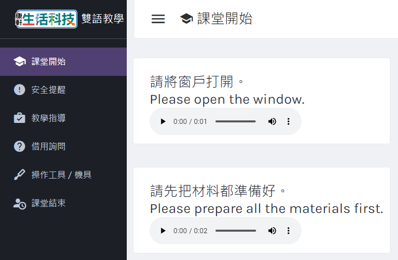

《快速連結》
教學檔案下載
影片資源清單
雙語教學資源
《六冊補充資源彙整》
活動教案、步驟說明書
學習單

《快速連結》
《六冊補充資源彙整》
◤電子書、PPT
[連結] 康軒數位高手
◤全冊打包下載
[下載] 全書教學檔案
◤各章檔案
【緒論 科技與產品】
[下載] SDG12負責任的消費與生產_學習單（學生版） [下載] SDG12負責任的消費與生產_學習單（教師版）
【第 1 章 架橋行家】[下載] 架橋行家_活動步驟說明書 [下載] SDG15陸域生命（學生版） [下載] SDG15陸域生命（教師版）
【第 2 章 玩轉跑跳碰】[下載] 玩轉跑跳碰（L 型支架）_活動步驟說明書 [下載] 玩轉跑跳碰（機構箱體）_活動步驟說明書
【活動PLUS 虹飛拱橋】[下載] 虹飛拱橋_活動步驟說明書 [下載] 虹飛拱橋_學習單（學生版） [下載] 虹飛拱橋_學習單（教師版）
【活動PLUS 懸浮置物架】[下載] 懸浮置物架_活動步驟說明書 [下載] 懸浮置物架_學習單（學生版） [下載] 懸浮置物架_學習單（教師版）
【活動PLUS 平面故事集】[下載] 平面故事集_活動步驟說明書 [下載] 平面故事集_學習單（學生版） [下載] 平面故事集_學習單（教師版）
【活動PLUS 夾子玩偶】[下載] 夾子玩偶_活動步驟說明書 [下載] 夾子玩偶_學習單（學生版） [下載] 夾子玩偶_學習單（教師版）
【緒論 科技與產品】
【P.125】 環保標章護家園 (2:42)
【第 1 章 架橋行家】
【P.127】 達文西橋 (3:43)
【P.127】 達文西橋搭建 (1:47)
【P.129】 倫敦奧運主場館建造縮時攝影 (1:56)
【P.129】 測量心女力 (4:59)1-1 橋梁簡介
【P.130】 港珠澳大橋 (8:18)
【P.132】 五楊高架道路施工動畫 (7:48)
【P.132】 梁橋建造動畫 (2:23)
【P.132】 跨海大橋的橋墩建造方法（簡體）(3:53)
【P.132】 國道4號潭子段鋼箱梁橋吊裝工程 (18:06)
【P.133】 減震器模型實驗 (0:32)
【P.133】 框架結構 (2:40)
【P.133】 建築耐震斜撐補強工法 (1:36)
【P.134】 七股溪橋 (5:02)
【P.135】 紙拱橋 (1:30)
【P.135】 中坑古道：石拱橋施工紀實 (1:48)
【P.136】 科博館人類文化廳
【P.136】 虹橋 (4:57)
【P.138】 桁架橋建造動畫 (4:43)
【P.140】 雙龍瀑布七彩吊橋 (0:47)
【P.140】 奧萬大吊橋 (6:48)
【P.140】 舊金山金門大橋工程創新 (15:27)
【P.140】 吊橋建造動畫 (4:00)
【P.142】 斜張橋的優缺點 (6:54)
【P.142】 金門大橋通車影片 (3:32)
【P.144】 橋梁工程新思維 (5:53)
【P.144】 新聞︰南方澳跨港大橋崩塌 (4:51)
【P.144】 大臺北11座古橋 (5:55)
【P.144】 樂高橋梁抗震挑戰 (13:42)
【P.144】 Google街景_關渡大橋1-2 材料接合
【P.146】 竹編工藝 (25:48)
【P.146】 皮鞋是怎麼做的 (4:44)
【P.146】 你家地板是怎麼來的 (1:51)
【P.148】 鎚子種類介紹 (11:11)
【P.148】 拔釘師傅 (5:25)
【P.149】 KD組合螺絲 (0:31)
【P.150】 榫卯智慧 (24:09)
【P.150】 解構斗栱 (1:51)
【P.150】 斗栱分解動畫 (2:33)
【P.151】 鳩尾榫 (0:24)
【P.152】 強力膠使用教學 (3:54)
【P.153】 塑膠也可以用電烙鐵熔接 (5:35)
【P.153】 金屬錫銲接合方法 (6:36)主題活動
●活動示範影片
【P.156】 利用義大利麵搭建橋梁 (10:02)
【P.160】 Bridge Designer 2016教學影片 (18:54)
【P.163】 錦帶橋木構造組裝 (3:47)活動PLUS
●活動示範影片
●生科實作Follow Me︰虹飛拱橋
【P.169】 清明上河圖 (26:14)
【P.169】 虹橋搭建 (1:15)
【P.169】 虹橋 (4:57)
【P.170】 懸浮置物架 (2:23)
【P.170】 懸浮置物架 - 冰棒棍版 (4:38)
【P.170】 懸浮置物架 - 樂高版 (3:33)科技廣角
【P.172】 國產材的前世今生 (17:03)
【P.172】 神桌背後的推手 (2:09)
【P.172】 臺灣木材大揭祕︰職人開講 (2:14)
【第 2 章 玩轉跑跳碰】
2-1 常見機構
【P.178】 折疊桌機構 (0:26)
【P.178】 折疊椅機構 (0:30)
【P.179】 電扇機構 (0:26)
【P.179】 水龍頭機構 (0:43)
【P.180】 門把機構 (4:55)
【P.180】 雨傘機構 (0:06)
【P.180】 傘 (4:03)
【P.181】 指南車機構 (0:35)
【P.183】 摩天輪運作原理 (2:06)
【P.184】 伸縮門機構 (0:19)
【P.184】 四連桿機構 (0:30)
【P.185】 雙曲柄機構 (1:30)
【P.185】 雙搖桿機構 (1:23)
【P.185】 雨刷機構 (0:30)
【P.185】 雨刷機構的演進 (07:42)
【P.185】 曲柄搖桿機構 (1:25)
【P.187】 汽車引擎汽門 (4:00)
【P.188】 YouBike租借系統 (3:22)
【P.189】 自行車脫鏈維修 (1:39)
【P.189】 自行車煞車種類 (2:46)
2-2 機構傳動
【P.191】 貓捉老鼠 (0:20)
【P.191】 單爪棘輪 (0:14)
【P.192】 新聞︰瑞士機械動偶工作坊 (5:38)
【P.192】 音樂盒中的機構 (8:02)
【P.193】 定滑輪 (0:20)
【P.193】 斜齒輪 (0:40)
【P.194】 缺齒齒輪與齒條 (0:40)
【P.194】 凸輪直線往復 (0:15)
【P.195】 蝸桿與蝸輪 (0:30)
【P.195】 間歇凸輪 (0:16)
【P.199】 母雞玩偶 (1:19)
【P.199】 間歇轉向凸輪機構 (0:45)
【P.200】 直升機 (0:22)
【P.201】 夏日燒烤 (0:22)
主題活動
●活動示範影片
●生科實作Follow Me︰玩轉跑跳碰（機構箱體）
【P.202】 機構玩偶舉例與製作︰毛毛蟲 (9:26)
【P.202】 機構玩偶舉例與製作︰敲鐵釘 (9:40)
【P.202】 機構玩偶舉例︰拔牙 (2:26)
【P.202】 機構玩偶舉例︰起司小偷 (0:21)
【P.202】 四種簡單木製機構 (3:22)
【P.212】 機構作品示例 (1:02)
活動PLUS
【P.220】 急回機構 (0:21)
【P.220】 日內瓦機構 (0:20)
【P.220】 夾爪機構 (0:12)
【P.220】 曲柄滑塊往復機構 (0:15)
【P.223】 夾子玩偶︰打鼓 (0:32)
【P.223】 夾子玩偶︰海鷗 (0:13)
【P.223】 夾子玩偶︰恐龍 (0:50)
【P.223】 夾子玩偶Linkage動作模擬 (0:21)
【P.223】 舉重玩偶 (0:32)
科技廣角
【P.224】 鵬灣跨海大橋開橋秀 (5:57)
【P.224】 超乎想像的6座開啟橋 (10:01)
【P.225】 鵬灣跨海大橋活動橋 (16:28)【機具材料】
●機具材料影片
【課室英語教學網】
[連結] 課室英語教學網
【雙語教學投影片】
[連結] 課室雙語、課程內容雙語PPT